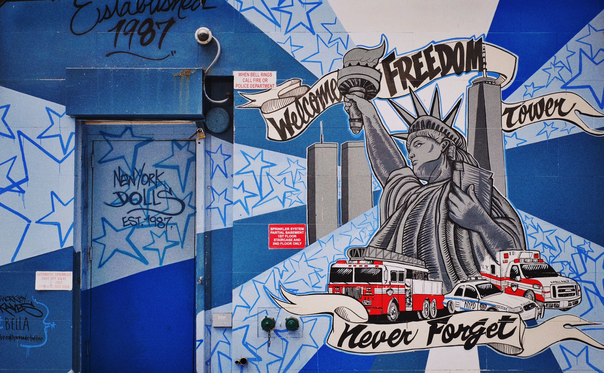

In NYC, anywhere you go you see a lot of different street art. Many artists express themselves with the art that they do and there work always has meaning behind it. Many artists risk themselves for doing street art because in most places street art is not allowed that’s why most artist are remained anonymous.
New York City is no stranger to street art many artists have used New York City as their canvas. Street art is visual art created in public places but there are also different kinds of street art like mural paintings, guerilla art and graffiti. Mural paintings are painted on walls most of the time and most of the time they have been created against the law but other times an artist is commissioned by local bars and coffee shops to draw murals outside of their businesses. Another form of street art is guerilla art which is the placement of a sculpture in a public place without official approval, most artist tend to work in secrecy because what they do is illegal most of the time they place their artwork during the night. The last type of street art is graffiti which writing or drawings that are painted on a wall or other surfaces with a public view. These are some of the street art that you see in an everyday life in New York city where ever you go.
Photo by Jamison Lottering on Unsplash
Photo by Piotr Jasinski on Flickr
Photo by Bobby Zucco on Flickr

Photo by Jamison Lottering on Unsplah
Artist express themselves through their artwork that they do which usually includes images, illustrations or symbols that try to convey a message to the viewers sometimes the artist has a specific audience they want to target. In New York City, there was a famous building called 5pointz where many artists went to go do their street art the building had many murals and graffiti art all over the building, the reason it was called 5pointz because it unified the 5 boroughs of New York city but the building became so popular it brought in many artists from all over the world just so they could express their artwork all over this building. In august 2015 a famous artist named Hanksy made a mural in SoHo called “Dump Trump” expressing how he felt when he found out Donald Trump announced his presidential run so he drew a poop emoji with Trumps face on it and said he considered Trump a joke. Another artist that expressed himself through his art is Banksy when he drew a mural in downtown Manhattan of the impressment of Turkish artist Zehra Dogan he was protesting against it because he thought it wasn’t fair she got in prisoned because of her artwork and he knows that he has drawn far worse things so he felt for her. This shows how many artists express themselves through their own artwork and you could find it anywhere in New York City.
 Photo by Pelle Sten on Flickr
Photo by Pelle Sten on Flickr